ID: ship-train-n04229480_4145/felzenszwalb_masked_softmax
Accuracy: 0.687 -> 0.483
Mean Recall: 0.687 -> 0.483
Mean Precision: 0.692 -> 0.548
Mean F1: 0.684 -> 0.472
Target Recall: 0.688 -> 0.961
Target Precision: 0.78 -> 0.206
Target F1: 0.731 -> 0.34
Orig Pred Recall: 0.877 -> 0.0
Orig Pred Precision: 0.68 -> 0.0
Orig Pred F1: 0.766 -> 0.0
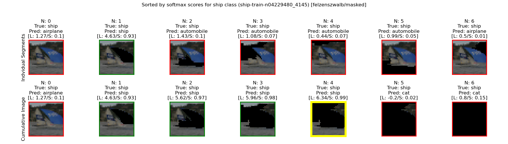 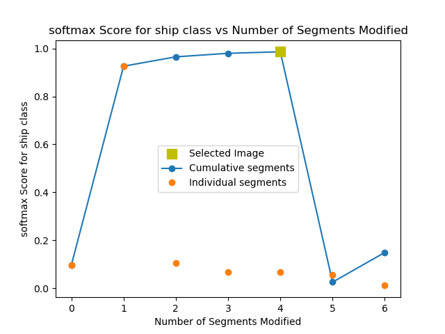 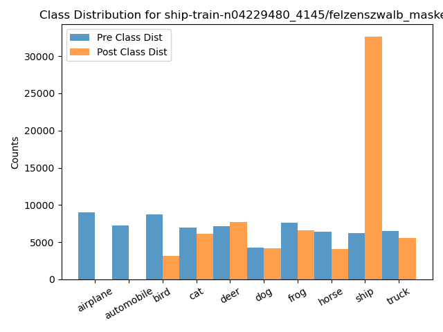ID: ship-train-n03602081_20790/felzenszwalb_gaussian_softmax
Accuracy: 0.687 -> 0.547
Mean Recall: 0.687 -> 0.547
Mean Precision: 0.692 -> 0.587
Mean F1: 0.684 -> 0.522
Target Recall: 0.688 -> 0.917
Target Precision: 0.78 -> 0.301
Target F1: 0.731 -> 0.453
Orig Pred Recall: 0.877 -> 0.0
Orig Pred Precision: 0.68 -> 0.0
Orig Pred F1: 0.766 -> 0.0
 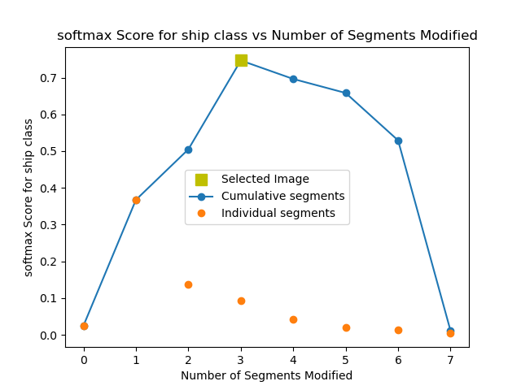
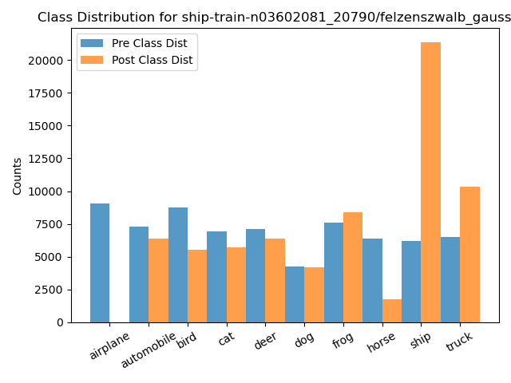
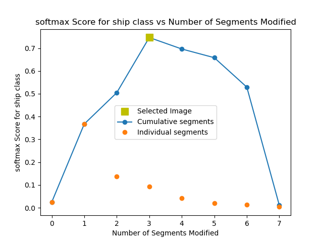
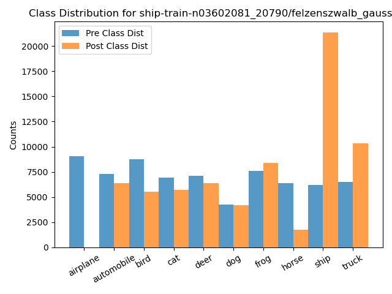
ID: ship-train-n04229480_6241/felzenszwalb_gaussian_softmax
Accuracy: 0.687 -> 0.597
Mean Recall: 0.687 -> 0.597
Mean Precision: 0.692 -> 0.597
Mean F1: 0.684 -> 0.579
Target Recall: 0.688 -> 0.911
Target Precision: 0.78 -> 0.328
Target F1: 0.731 -> 0.483
Orig Pred Recall: 0.877 -> 0.0
Orig Pred Precision: 0.68 -> 0.0
Orig Pred F1: 0.766 -> 0.0
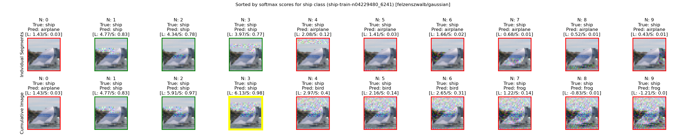 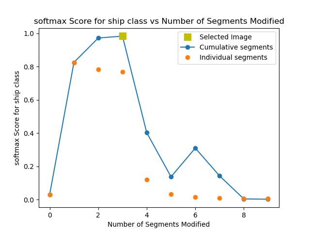 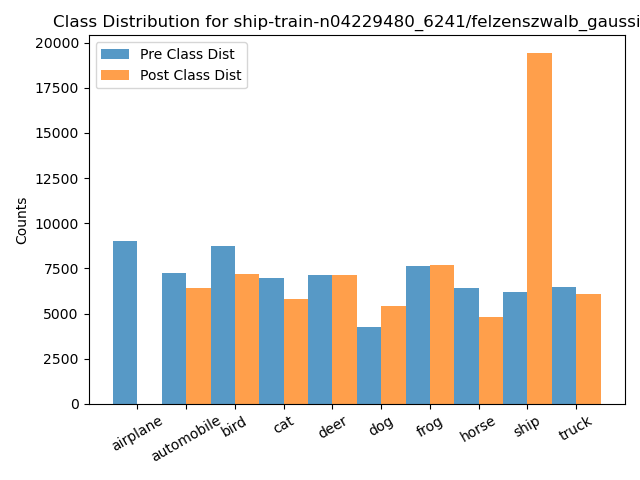ID: ship-train-n03552749_13031/felzenszwalb_gaussian_softmax
Accuracy: 0.687 -> 0.6
Mean Recall: 0.687 -> 0.6
Mean Precision: 0.692 -> 0.596
Mean F1: 0.684 -> 0.58
Target Recall: 0.688 -> 0.896
Target Precision: 0.78 -> 0.337
Target F1: 0.731 -> 0.49
Orig Pred Recall: 0.877 -> 0.0
Orig Pred Precision: 0.68 -> 0.0
Orig Pred F1: 0.766 -> 0.0
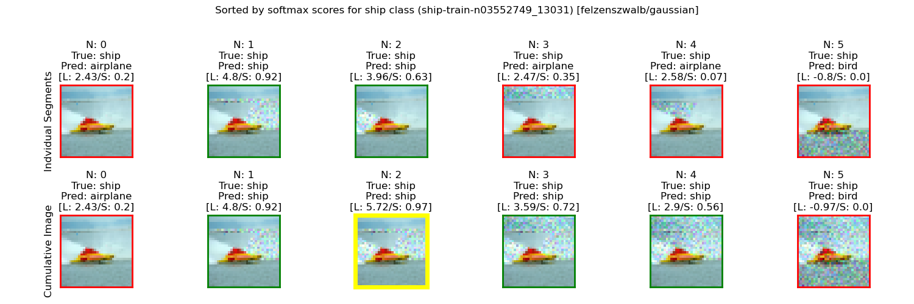 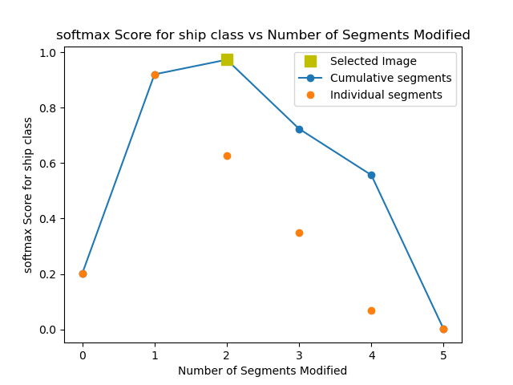 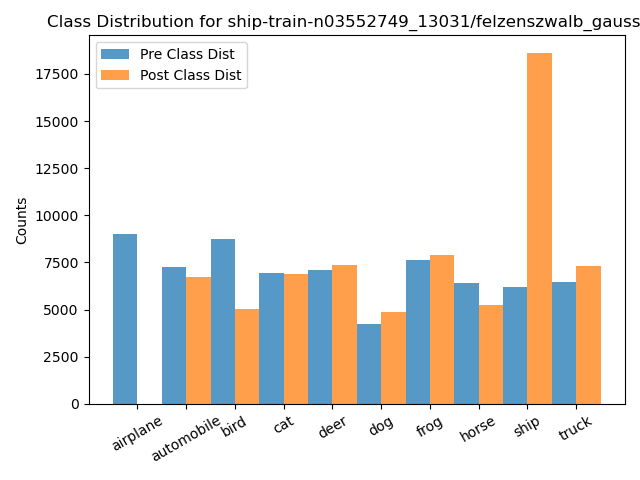ID: ship-train-n03977592_4858/felzenszwalb_gaussian_softmax
Accuracy: 0.687 -> 0.609
Mean Recall: 0.687 -> 0.609
Mean Precision: 0.692 -> 0.589
Mean F1: 0.684 -> 0.585
Target Recall: 0.688 -> 0.868
Target Precision: 0.78 -> 0.367
Target F1: 0.731 -> 0.516
Orig Pred Recall: 0.877 -> 0.0
Orig Pred Precision: 0.68 -> 0.0
Orig Pred F1: 0.766 -> 0.0
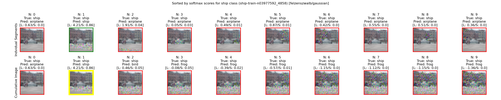 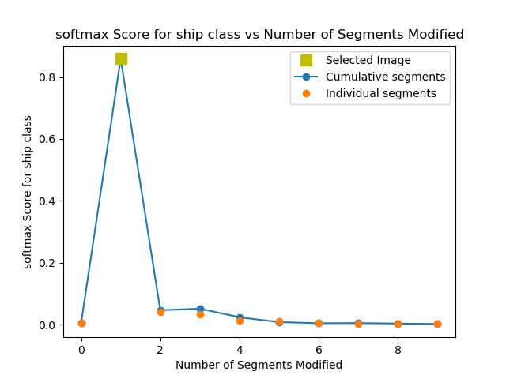 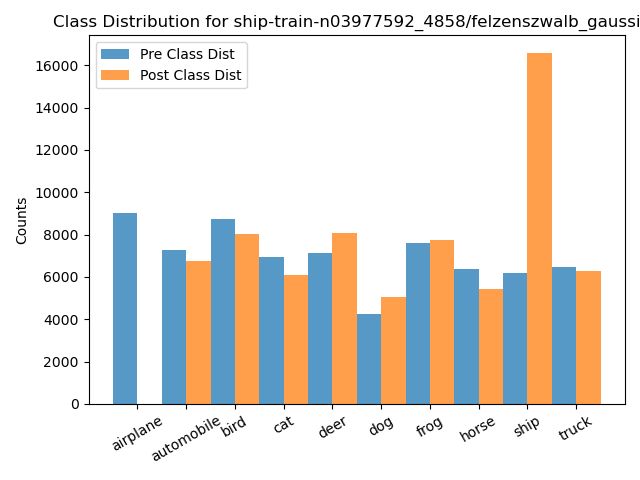ID: ship-train-n03061345_4127/felzenszwalb_gaussian_softmax
Accuracy: 0.687 -> 0.599
Mean Recall: 0.687 -> 0.599
Mean Precision: 0.692 -> 0.59
Mean F1: 0.684 -> 0.577
Target Recall: 0.688 -> 0.864
Target Precision: 0.78 -> 0.358
Target F1: 0.731 -> 0.507
Orig Pred Recall: 0.877 -> 0.0
Orig Pred Precision: 0.68 -> 0.0
Orig Pred F1: 0.766 -> 0.0
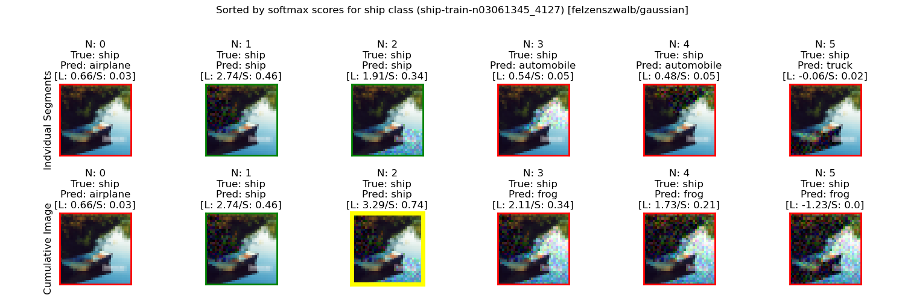 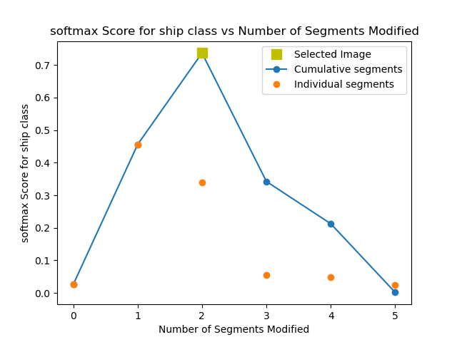 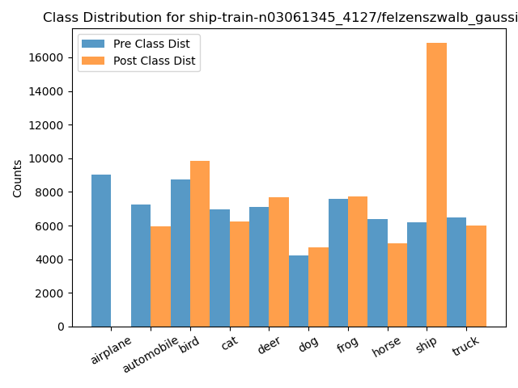ID: ship-train-n03609235_6329/felzenszwalb_gaussian_softmax
Accuracy: 0.687 -> 0.609
Mean Recall: 0.687 -> 0.609
Mean Precision: 0.692 -> 0.588
Mean F1: 0.684 -> 0.584
Target Recall: 0.688 -> 0.864
Target Precision: 0.78 -> 0.369
Target F1: 0.731 -> 0.517
Orig Pred Recall: 0.877 -> 0.0
Orig Pred Precision: 0.68 -> 0.0
Orig Pred F1: 0.766 -> 0.0
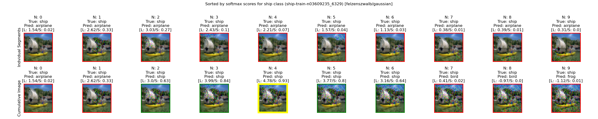 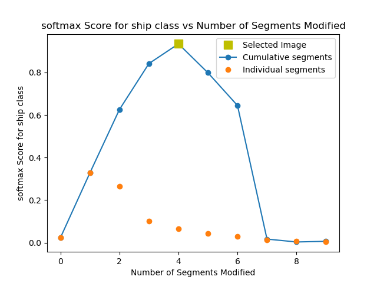
ID: ship-train-n03329663_15692/felzenszwalb_gaussian_softmax
Accuracy: 0.687 -> 0.625
Mean Recall: 0.687 -> 0.625
Mean Precision: 0.692 -> 0.687
Mean F1: 0.684 -> 0.613
Target Recall: 0.688 -> 0.863
Target Precision: 0.78 -> 0.394
Target F1: 0.731 -> 0.541
Orig Pred Recall: 0.877 -> 0.139
Orig Pred Precision: 0.68 -> 0.972
Orig Pred F1: 0.766 -> 0.244
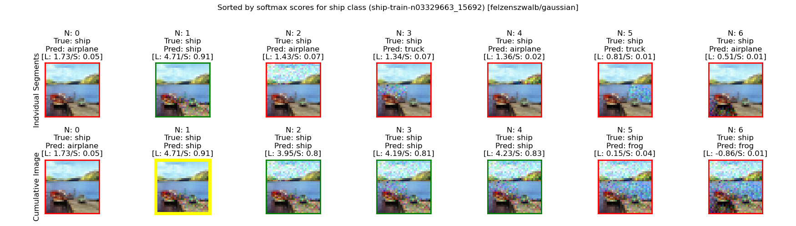 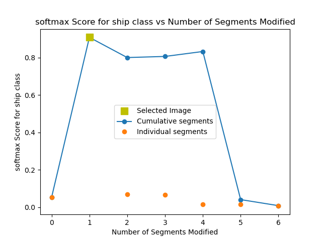 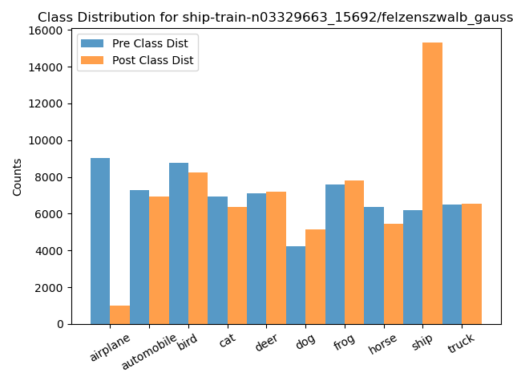ID: ship-train-n04038338_1239/felzenszwalb_gaussian_softmax
Accuracy: 0.687 -> 0.643
Mean Recall: 0.687 -> 0.643
Mean Precision: 0.692 -> 0.69
Mean F1: 0.684 -> 0.64
Target Recall: 0.688 -> 0.861
Target Precision: 0.78 -> 0.428
Target F1: 0.731 -> 0.572
Orig Pred Recall: 0.877 -> 0.343
Orig Pred Precision: 0.68 -> 0.982
Orig Pred F1: 0.766 -> 0.508
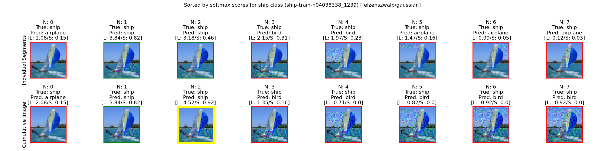 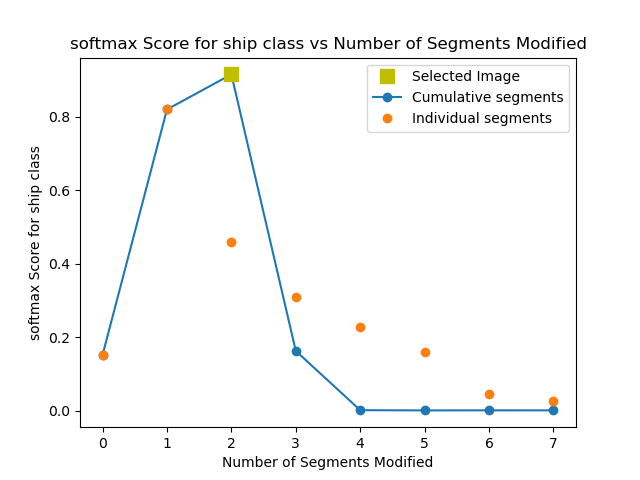 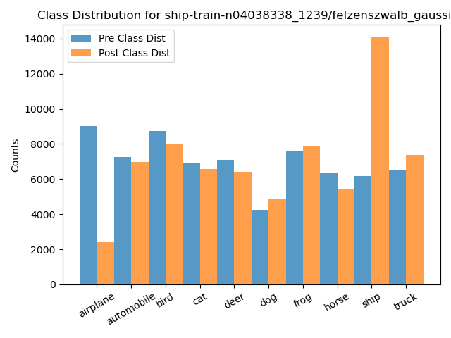ID: ship-train-n02843029_6564/felzenszwalb_gaussian_softmax
Accuracy: 0.687 -> 0.613
Mean Recall: 0.687 -> 0.613
Mean Precision: 0.692 -> 0.626
Mean F1: 0.684 -> 0.595
Target Recall: 0.688 -> 0.859
Target Precision: 0.78 -> 0.308
Target F1: 0.731 -> 0.454
Orig Pred Recall: 0.549 -> 0.0
Orig Pred Precision: 0.553 -> 0.0
Orig Pred F1: 0.551 -> 0.0
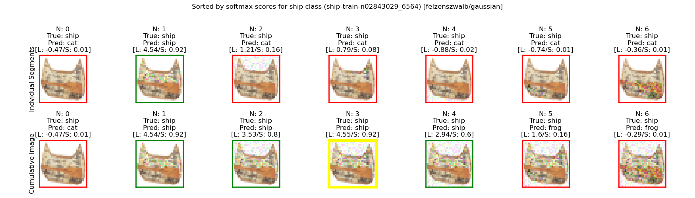 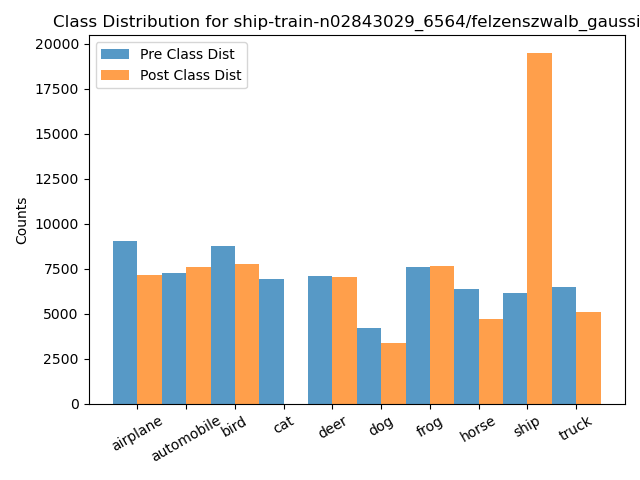
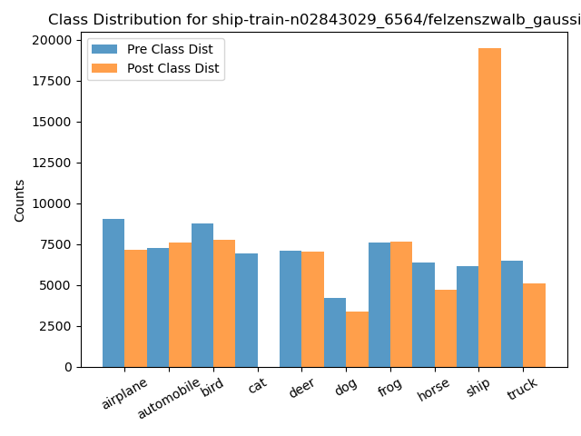
ID: ship-train-n04024983_1985/felzenszwalb_masked_softmax
Accuracy: 0.687 -> 0.664
Mean Recall: 0.687 -> 0.664
Mean Precision: 0.692 -> 0.697
Mean F1: 0.684 -> 0.666
Target Recall: 0.688 -> 0.858
Target Precision: 0.78 -> 0.469
Target F1: 0.731 -> 0.606
Orig Pred Recall: 0.877 -> 0.766
Orig Pred Precision: 0.68 -> 0.829
Orig Pred F1: 0.766 -> 0.796
 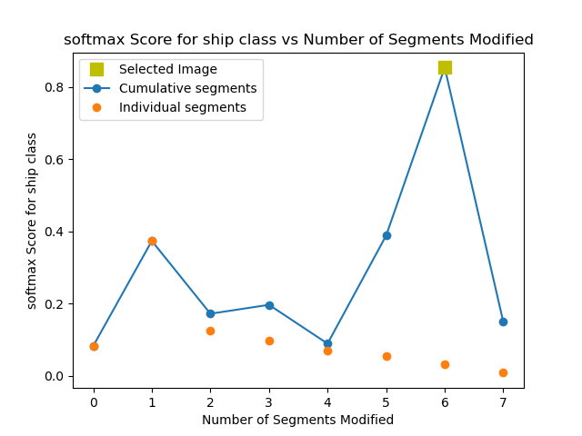
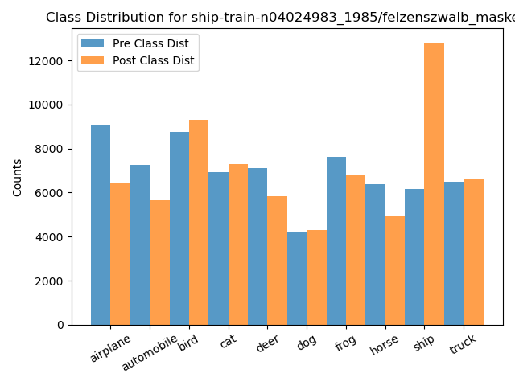
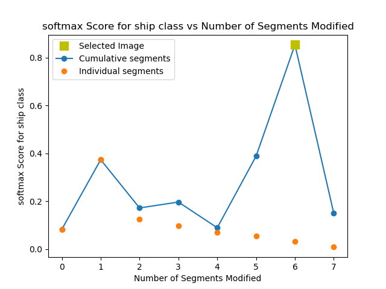
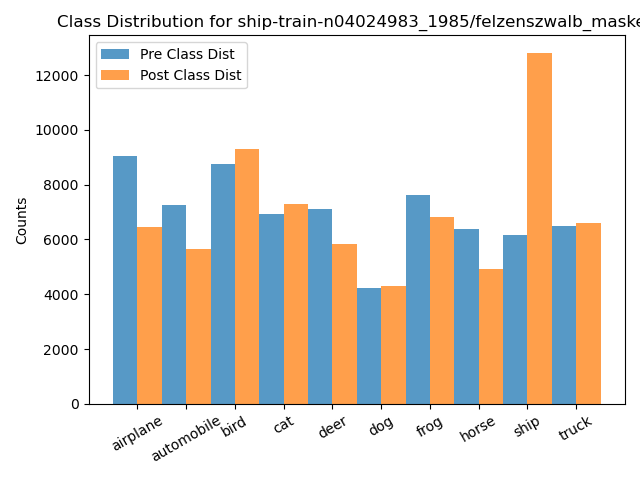
ID: ship-train-n03236423_7696/felzenszwalb_masked_softmax
Accuracy: 0.687 -> 0.674
Mean Recall: 0.687 -> 0.674
Mean Precision: 0.692 -> 0.693
Mean F1: 0.684 -> 0.674
Target Recall: 0.688 -> 0.853
Target Precision: 0.78 -> 0.523
Target F1: 0.731 -> 0.648
Orig Pred Recall: 0.877 -> 0.692
Orig Pred Precision: 0.68 -> 0.905
Orig Pred F1: 0.766 -> 0.784
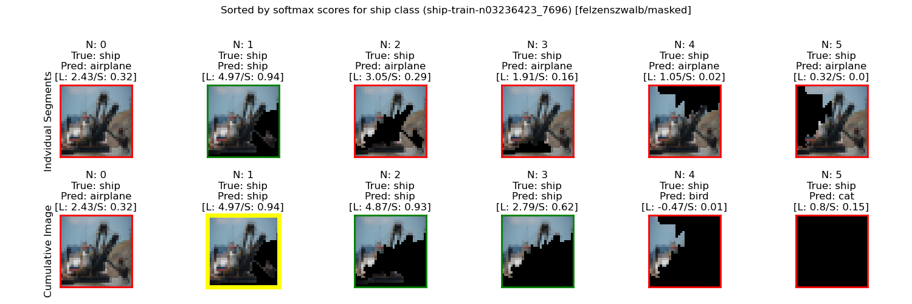 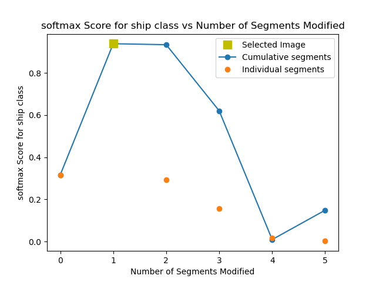 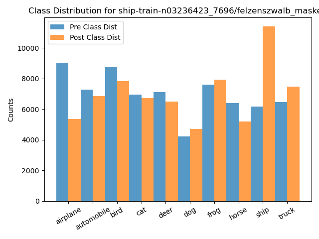ID: ship-train-n03199901_9979/felzenszwalb_gaussian_softmax
Accuracy: 0.687 -> 0.613
Mean Recall: 0.687 -> 0.613
Mean Precision: 0.692 -> 0.602
Mean F1: 0.684 -> 0.586
Target Recall: 0.688 -> 0.85
Target Precision: 0.78 -> 0.378
Target F1: 0.731 -> 0.523
Orig Pred Recall: 0.877 -> 0.001
Orig Pred Precision: 0.68 -> 0.16
Orig Pred F1: 0.766 -> 0.001
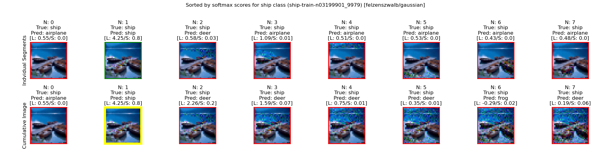 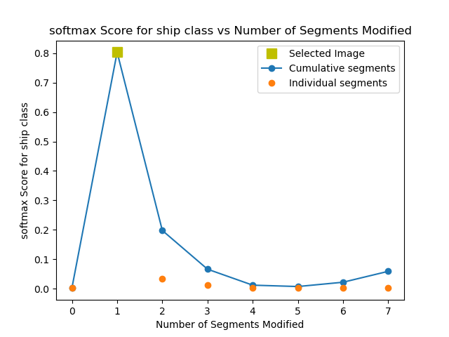 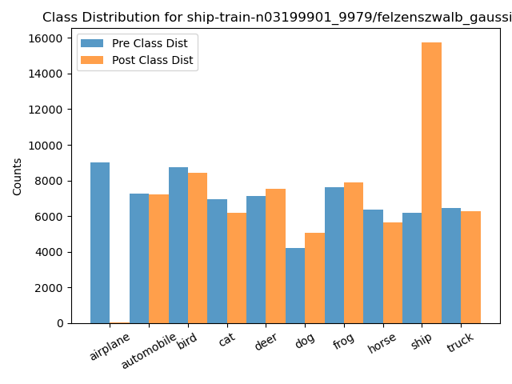ID: ship-train-n03545470_13786/felzenszwalb_gaussian_softmax
Accuracy: 0.687 -> 0.613
Mean Recall: 0.687 -> 0.613
Mean Precision: 0.692 -> 0.583
Mean F1: 0.684 -> 0.586
Target Recall: 0.688 -> 0.849
Target Precision: 0.78 -> 0.378
Target F1: 0.731 -> 0.523
Orig Pred Recall: 0.877 -> 0.0
Orig Pred Precision: 0.68 -> 0.0
Orig Pred F1: 0.766 -> 0.0
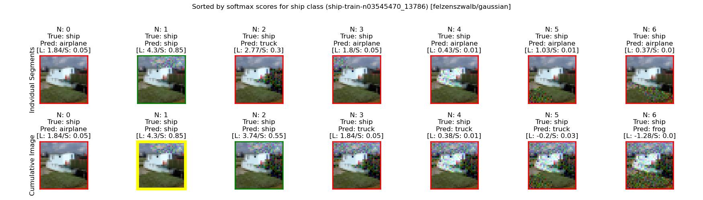 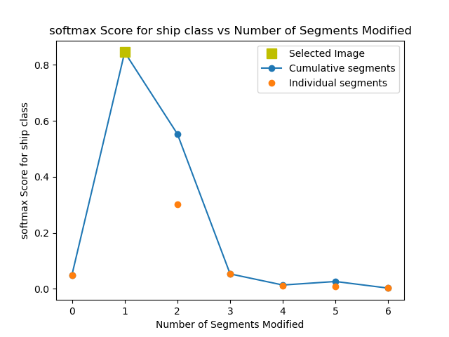 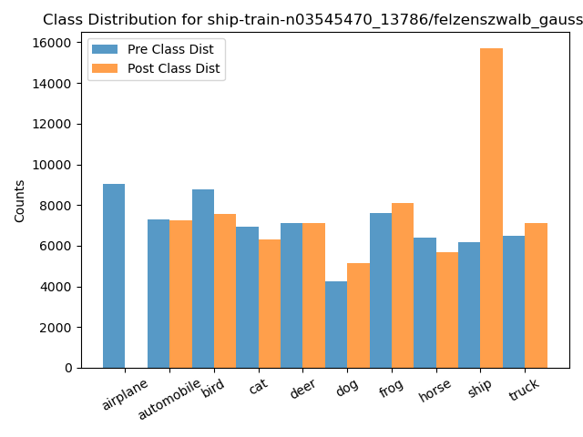ID: ship-train-n02858304_9666/felzenszwalb_gaussian_softmax
Accuracy: 0.687 -> 0.658
Mean Recall: 0.687 -> 0.658
Mean Precision: 0.692 -> 0.691
Mean F1: 0.684 -> 0.657
Target Recall: 0.688 -> 0.849
Target Precision: 0.78 -> 0.481
Target F1: 0.731 -> 0.614
Orig Pred Recall: 0.877 -> 0.448
Orig Pred Precision: 0.68 -> 0.96
Orig Pred F1: 0.766 -> 0.611
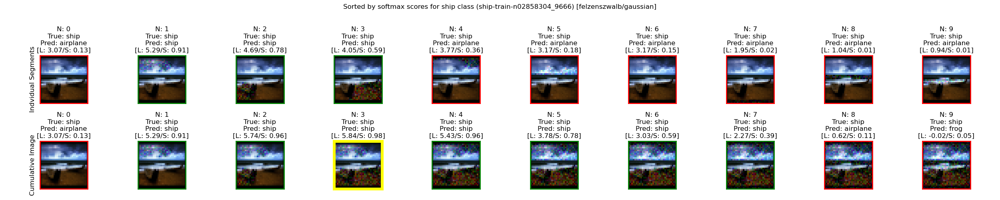 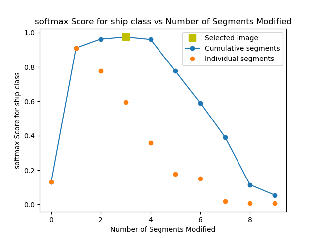 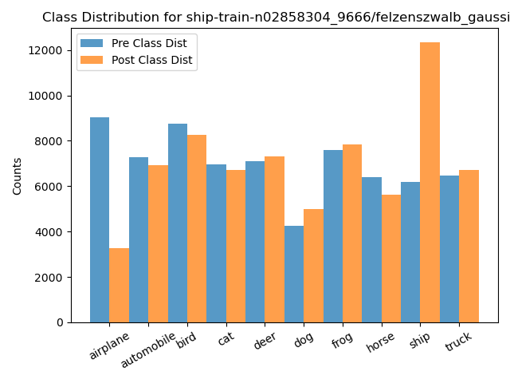ID: ship-train-n03254374_16147/felzenszwalb_masked_softmax
Accuracy: 0.687 -> 0.502
Mean Recall: 0.687 -> 0.502
Mean Precision: 0.692 -> 0.53
Mean F1: 0.684 -> 0.478
Target Recall: 0.688 -> 0.844
Target Precision: 0.78 -> 0.208
Target F1: 0.731 -> 0.334
Orig Pred Recall: 0.743 -> 0.0
Orig Pred Precision: 0.594 -> 0.0
Orig Pred F1: 0.66 -> 0.0
 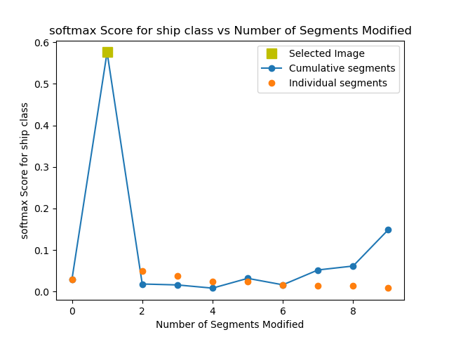
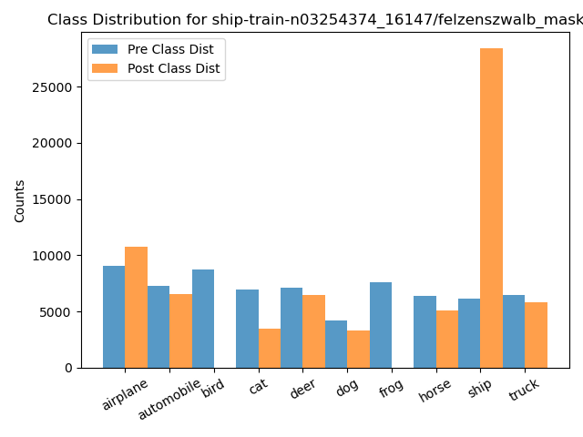
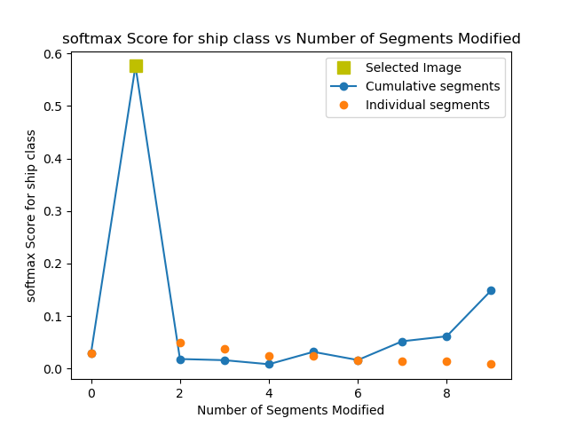
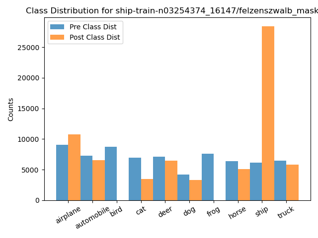
ID: ship-train-n04495843_24464/felzenszwalb_gaussian_softmax
Accuracy: 0.687 -> 0.613
Mean Recall: 0.687 -> 0.613
Mean Precision: 0.692 -> 0.586
Mean F1: 0.684 -> 0.586
Target Recall: 0.688 -> 0.844
Target Precision: 0.78 -> 0.382
Target F1: 0.731 -> 0.526
Orig Pred Recall: 0.877 -> 0.0
Orig Pred Precision: 0.68 -> 0.0
Orig Pred F1: 0.766 -> 0.0
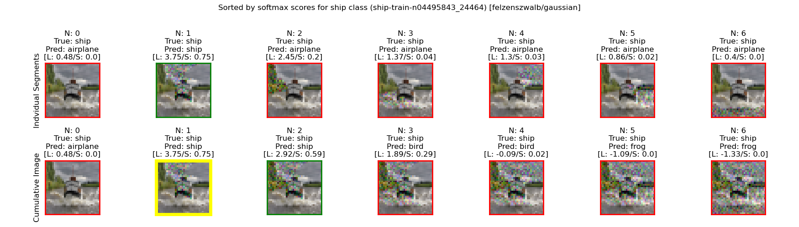 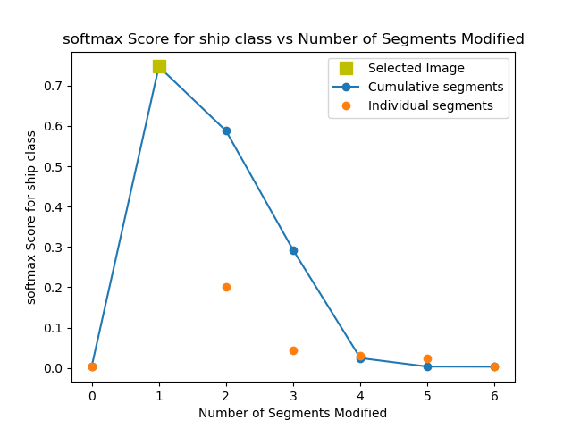 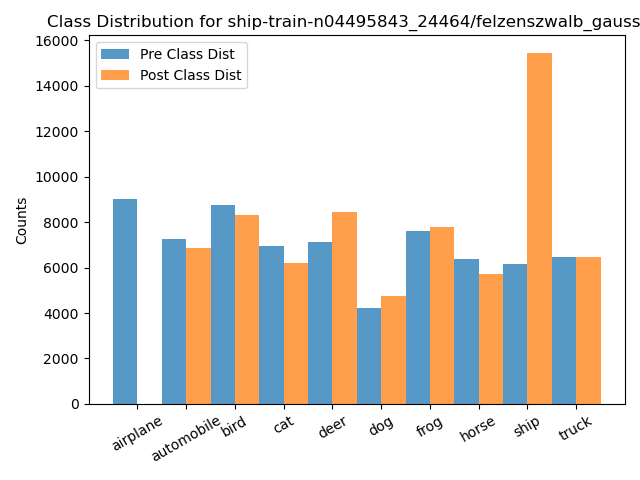ID: ship-train-n04115456_8001/felzenszwalb_masked_softmax
Accuracy: 0.687 -> 0.662
Mean Recall: 0.687 -> 0.662
Mean Precision: 0.692 -> 0.697
Mean F1: 0.684 -> 0.663
Target Recall: 0.688 -> 0.841
Target Precision: 0.78 -> 0.434
Target F1: 0.731 -> 0.573
Orig Pred Recall: 0.877 -> 0.864
Orig Pred Precision: 0.68 -> 0.671
Orig Pred F1: 0.766 -> 0.756
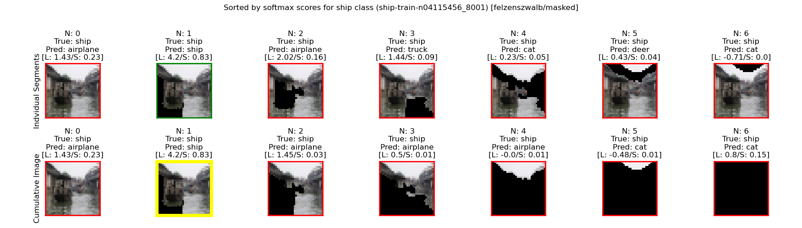 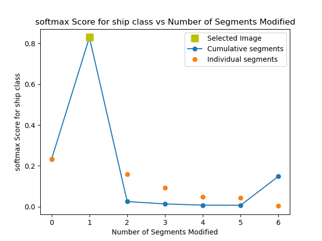 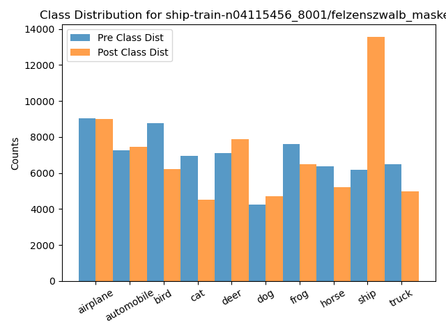ID: ship-train-n04229480_1395/felzenszwalb_gaussian_softmax
Accuracy: 0.687 -> 0.682
Mean Recall: 0.687 -> 0.682
Mean Precision: 0.692 -> 0.697
Mean F1: 0.684 -> 0.681
Target Recall: 0.688 -> 0.837
Target Precision: 0.78 -> 0.581
Target F1: 0.731 -> 0.686
Orig Pred Recall: 0.877 -> 0.727
Orig Pred Precision: 0.68 -> 0.888
Orig Pred F1: 0.766 -> 0.799
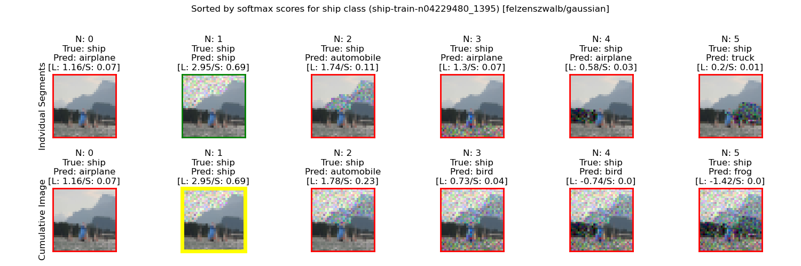ID: ship-train-n03977592_948/felzenszwalb_gaussian_softmax
Accuracy: 0.687 -> 0.682
Mean Recall: 0.687 -> 0.682
Mean Precision: 0.692 -> 0.694
Mean F1: 0.684 -> 0.68
Target Recall: 0.688 -> 0.837
Target Precision: 0.78 -> 0.58
Target F1: 0.731 -> 0.685
Orig Pred Recall: 0.877 -> 0.753
Orig Pred Precision: 0.68 -> 0.852
Orig Pred F1: 0.766 -> 0.799
ID: ship-train-n03609235_6329/felzenszwalb_masked_softmax
Accuracy: 0.687 -> 0.684
Mean Recall: 0.687 -> 0.684
Mean Precision: 0.692 -> 0.693
Mean F1: 0.684 -> 0.682
Target Recall: 0.688 -> 0.835
Target Precision: 0.78 -> 0.582
Target F1: 0.731 -> 0.686
Orig Pred Recall: 0.877 -> 0.748
Orig Pred Precision: 0.68 -> 0.849
Orig Pred F1: 0.766 -> 0.796
ID: ship-train-n03061345_7434/felzenszwalb_gaussian_softmax
Accuracy: 0.687 -> 0.621
Mean Recall: 0.687 -> 0.621
Mean Precision: 0.692 -> 0.675
Mean F1: 0.684 -> 0.601
Target Recall: 0.688 -> 0.834
Target Precision: 0.78 -> 0.402
Target F1: 0.731 -> 0.543
Orig Pred Recall: 0.877 -> 0.067
Orig Pred Precision: 0.68 -> 0.908
Orig Pred F1: 0.766 -> 0.124

ID: ship-train-n03236423_7696/felzenszwalb_gaussian_softmax
Accuracy: 0.687 -> 0.683
Mean Recall: 0.687 -> 0.683
Mean Precision: 0.692 -> 0.695
Mean F1: 0.684 -> 0.682
Target Recall: 0.688 -> 0.834
Target Precision: 0.78 -> 0.586
Target F1: 0.731 -> 0.688
Orig Pred Recall: 0.877 -> 0.724
Orig Pred Precision: 0.68 -> 0.883
Orig Pred F1: 0.766 -> 0.796
ID: ship-train-n04229480_6241/felzenszwalb_masked_softmax
Accuracy: 0.687 -> 0.683
Mean Recall: 0.687 -> 0.683
Mean Precision: 0.692 -> 0.694
Mean F1: 0.684 -> 0.682
Target Recall: 0.688 -> 0.829
Target Precision: 0.78 -> 0.59
Target F1: 0.731 -> 0.689
Orig Pred Recall: 0.877 -> 0.739
Orig Pred Precision: 0.68 -> 0.859
Orig Pred F1: 0.766 -> 0.795
ID: ship-train-n02792552_24775/felzenszwalb_gaussian_softmax
Accuracy: 0.687 -> 0.685
Mean Recall: 0.687 -> 0.685
Mean Precision: 0.692 -> 0.694
Mean F1: 0.684 -> 0.683
Target Recall: 0.688 -> 0.825
Target Precision: 0.78 -> 0.602
Target F1: 0.731 -> 0.696
Orig Pred Recall: 0.877 -> 0.757
Orig Pred Precision: 0.68 -> 0.854
Orig Pred F1: 0.766 -> 0.803
ID: ship-train-n02737351_11768/felzenszwalb_masked_softmax
Accuracy: 0.687 -> 0.605
Mean Recall: 0.687 -> 0.605
Mean Precision: 0.692 -> 0.598
Mean F1: 0.684 -> 0.581
Target Recall: 0.688 -> 0.825
Target Precision: 0.78 -> 0.341
Target F1: 0.731 -> 0.482
Orig Pred Recall: 0.668 -> 0.0
Orig Pred Precision: 0.722 -> 0.0
Orig Pred F1: 0.694 -> 0.0
ID: ship-train-n03602081_11972/felzenszwalb_gaussian_softmax
Accuracy: 0.687 -> 0.598
Mean Recall: 0.687 -> 0.598
Mean Precision: 0.692 -> 0.6
Mean F1: 0.684 -> 0.576
Target Recall: 0.688 -> 0.825
Target Precision: 0.78 -> 0.348
Target F1: 0.731 -> 0.49
Orig Pred Recall: 0.769 -> 0.0
Orig Pred Precision: 0.74 -> 0.0
Orig Pred F1: 0.754 -> 0.0

ID: ship-train-n02843029_6564/felzenszwalb_masked_softmax
Accuracy: 0.687 -> 0.609
Mean Recall: 0.687 -> 0.609
Mean Precision: 0.692 -> 0.622
Mean F1: 0.684 -> 0.59
Target Recall: 0.688 -> 0.824
Target Precision: 0.78 -> 0.305
Target F1: 0.731 -> 0.445
Orig Pred Recall: 0.549 -> 0.0
Orig Pred Precision: 0.553 -> 0.0
Orig Pred F1: 0.551 -> 0.0
ID: ship-train-n03545470_11711/felzenszwalb_gaussian_softmax
Accuracy: 0.687 -> 0.685
Mean Recall: 0.687 -> 0.685
Mean Precision: 0.692 -> 0.69
Mean F1: 0.684 -> 0.682
Target Recall: 0.688 -> 0.821
Target Precision: 0.78 -> 0.592
Target F1: 0.731 -> 0.688
Orig Pred Recall: 0.877 -> 0.813
Orig Pred Precision: 0.68 -> 0.789
Orig Pred F1: 0.766 -> 0.801
ID: ship-train-n03199901_30438/felzenszwalb_gaussian_softmax
Accuracy: 0.687 -> 0.684
Mean Recall: 0.687 -> 0.684
Mean Precision: 0.692 -> 0.693
Mean F1: 0.684 -> 0.682
Target Recall: 0.688 -> 0.819
Target Precision: 0.78 -> 0.613
Target F1: 0.731 -> 0.701
Orig Pred Recall: 0.877 -> 0.801
Orig Pred Precision: 0.68 -> 0.804
Orig Pred F1: 0.766 -> 0.802
ID: ship-train-n04037964_5660/felzenszwalb_masked_softmax
Accuracy: 0.687 -> 0.637
Mean Recall: 0.687 -> 0.637
Mean Precision: 0.692 -> 0.706
Mean F1: 0.684 -> 0.628
Target Recall: 0.688 -> 0.818
Target Precision: 0.78 -> 0.399
Target F1: 0.731 -> 0.536
Orig Pred Recall: 0.743 -> 0.275
Orig Pred Precision: 0.594 -> 0.976
Orig Pred F1: 0.66 -> 0.429


ID: ship-train-n04024983_12237/felzenszwalb_gaussian_softmax
Accuracy: 0.687 -> 0.614
Mean Recall: 0.687 -> 0.614
Mean Precision: 0.692 -> 0.69
Mean F1: 0.684 -> 0.598
Target Recall: 0.688 -> 0.812
Target Precision: 0.78 -> 0.367
Target F1: 0.731 -> 0.505
Orig Pred Recall: 0.769 -> 0.074
Orig Pred Precision: 0.74 -> 0.949
Orig Pred F1: 0.754 -> 0.138
ID: ship-train-n04229480_7120/felzenszwalb_gaussian_softmax
Accuracy: 0.687 -> 0.689
Mean Recall: 0.687 -> 0.689
Mean Precision: 0.692 -> 0.693
Mean F1: 0.684 -> 0.686
Target Recall: 0.688 -> 0.807
Target Precision: 0.78 -> 0.647
Target F1: 0.731 -> 0.718
Orig Pred Recall: 0.877 -> 0.788
Orig Pred Precision: 0.68 -> 0.815
Orig Pred F1: 0.766 -> 0.801
ID: ship-train-n04409128_51365/felzenszwalb_masked_softmax
Accuracy: 0.687 -> 0.625
Mean Recall: 0.687 -> 0.625
Mean Precision: 0.692 -> 0.691
Mean F1: 0.684 -> 0.597
Target Recall: 0.688 -> 0.802
Target Precision: 0.78 -> 0.386
Target F1: 0.731 -> 0.521
Orig Pred Recall: 0.743 -> 0.005
Orig Pred Precision: 0.594 -> 0.971
Orig Pred F1: 0.66 -> 0.009
ID: ship-train-n04038338_1239/felzenszwalb_masked_softmax
Accuracy: 0.687 -> 0.686
Mean Recall: 0.687 -> 0.686
Mean Precision: 0.692 -> 0.689
Mean F1: 0.684 -> 0.683
Target Recall: 0.688 -> 0.796
Target Precision: 0.78 -> 0.634
Target F1: 0.731 -> 0.706
Orig Pred Recall: 0.877 -> 0.831
Orig Pred Precision: 0.68 -> 0.755
Orig Pred F1: 0.766 -> 0.792
ID: ship-train-n03105306_715/felzenszwalb_masked_softmax
Accuracy: 0.687 -> 0.669
Mean Recall: 0.687 -> 0.669
Mean Precision: 0.692 -> 0.688
Mean F1: 0.684 -> 0.667
Target Recall: 0.688 -> 0.796
Target Precision: 0.78 -> 0.482
Target F1: 0.731 -> 0.601
Orig Pred Recall: 0.808 -> 0.724
Orig Pred Precision: 0.744 -> 0.859
Orig Pred F1: 0.775 -> 0.786
ID: ship-train-n03545470_11711/felzenszwalb_masked_softmax
Accuracy: 0.687 -> 0.68
Mean Recall: 0.687 -> 0.68
Mean Precision: 0.692 -> 0.69
Mean F1: 0.684 -> 0.678
Target Recall: 0.688 -> 0.795
Target Precision: 0.78 -> 0.603
Target F1: 0.731 -> 0.686
Orig Pred Recall: 0.877 -> 0.874
Orig Pred Precision: 0.68 -> 0.658
Orig Pred F1: 0.766 -> 0.75
ID: ship-train-n03545470_6550/felzenszwalb_gaussian_softmax
Accuracy: 0.687 -> 0.682
Mean Recall: 0.687 -> 0.682
Mean Precision: 0.692 -> 0.691
Mean F1: 0.684 -> 0.678
Target Recall: 0.688 -> 0.792
Target Precision: 0.78 -> 0.59
Target F1: 0.731 -> 0.676
Orig Pred Recall: 0.743 -> 0.581
Orig Pred Precision: 0.594 -> 0.774
Orig Pred F1: 0.66 -> 0.664
ID: ship-train-n03545470_13786/felzenszwalb_masked_softmax
Accuracy: 0.687 -> 0.689
Mean Recall: 0.687 -> 0.689
Mean Precision: 0.692 -> 0.693
Mean F1: 0.684 -> 0.687
Target Recall: 0.688 -> 0.791
Target Precision: 0.78 -> 0.671
Target F1: 0.731 -> 0.726
Orig Pred Recall: 0.877 -> 0.808
Orig Pred Precision: 0.68 -> 0.794
Orig Pred F1: 0.766 -> 0.801
ID: ship-train-n04095210_1796/felzenszwalb_gaussian_softmax
Accuracy: 0.687 -> 0.612
Mean Recall: 0.687 -> 0.612
Mean Precision: 0.692 -> 0.697
Mean F1: 0.684 -> 0.585
Target Recall: 0.688 -> 0.789
Target Precision: 0.78 -> 0.361
Target F1: 0.731 -> 0.496
Orig Pred Recall: 0.61 -> 0.0
Orig Pred Precision: 0.6 -> 1.0
Orig Pred F1: 0.605 -> 0.001
ID: ship-train-n04244997_3666/felzenszwalb_masked_softmax
Accuracy: 0.687 -> 0.69
Mean Recall: 0.687 -> 0.69
Mean Precision: 0.692 -> 0.693
Mean F1: 0.684 -> 0.687
Target Recall: 0.688 -> 0.785
Target Precision: 0.78 -> 0.684
Target F1: 0.731 -> 0.731
Orig Pred Recall: 0.877 -> 0.805
Orig Pred Precision: 0.68 -> 0.8
Orig Pred F1: 0.766 -> 0.802
ID: ship-train-n04229480_1395/felzenszwalb_masked_softmax
Accuracy: 0.687 -> 0.685
Mean Recall: 0.687 -> 0.685
Mean Precision: 0.692 -> 0.691
Mean F1: 0.684 -> 0.682
Target Recall: 0.688 -> 0.78
Target Precision: 0.78 -> 0.659
Target F1: 0.731 -> 0.714
Orig Pred Recall: 0.877 -> 0.856
Orig Pred Precision: 0.68 -> 0.708
Orig Pred F1: 0.766 -> 0.775
ID: ship-train-n03602081_11972/felzenszwalb_masked_softmax
Accuracy: 0.687 -> 0.601
Mean Recall: 0.687 -> 0.601
Mean Precision: 0.692 -> 0.593
Mean F1: 0.684 -> 0.575
Target Recall: 0.688 -> 0.779
Target Precision: 0.78 -> 0.363
Target F1: 0.731 -> 0.495
Orig Pred Recall: 0.769 -> 0.0
Orig Pred Precision: 0.74 -> 0.0
Orig Pred F1: 0.754 -> 0.0
ID: ship-train-n04244997_3666/felzenszwalb_gaussian_softmax
Accuracy: 0.687 -> 0.69
Mean Recall: 0.687 -> 0.69
Mean Precision: 0.692 -> 0.693
Mean F1: 0.684 -> 0.688
Target Recall: 0.688 -> 0.777
Target Precision: 0.78 -> 0.694
Target F1: 0.731 -> 0.733
Orig Pred Recall: 0.877 -> 0.812
Orig Pred Precision: 0.68 -> 0.792
Orig Pred F1: 0.766 -> 0.802
ID: ship-train-n02947660_8595/felzenszwalb_masked_softmax
Accuracy: 0.687 -> 0.663
Mean Recall: 0.687 -> 0.663
Mean Precision: 0.692 -> 0.693
Mean F1: 0.684 -> 0.658
Target Recall: 0.688 -> 0.771
Target Precision: 0.78 -> 0.618
Target F1: 0.731 -> 0.686
Orig Pred Recall: 0.734 -> 0.522
Orig Pred Precision: 0.804 -> 0.951
Orig Pred F1: 0.767 -> 0.674

ID: ship-train-n04133114_161/felzenszwalb_gaussian_softmax
Accuracy: 0.687 -> 0.691
Mean Recall: 0.687 -> 0.691
Mean Precision: 0.692 -> 0.692
Mean F1: 0.684 -> 0.688
Target Recall: 0.688 -> 0.768
Target Precision: 0.78 -> 0.706
Target F1: 0.731 -> 0.736
Orig Pred Recall: 0.877 -> 0.789
Orig Pred Precision: 0.68 -> 0.827
Orig Pred F1: 0.766 -> 0.808
ID: ship-train-n02858304_24928/felzenszwalb_gaussian_softmax
Accuracy: 0.687 -> 0.682
Mean Recall: 0.687 -> 0.682
Mean Precision: 0.692 -> 0.694
Mean F1: 0.684 -> 0.679
Target Recall: 0.688 -> 0.768
Target Precision: 0.78 -> 0.655
Target F1: 0.731 -> 0.707
Orig Pred Recall: 0.769 -> 0.671
Orig Pred Precision: 0.74 -> 0.804
Orig Pred F1: 0.754 -> 0.731
ID: ship-train-n03609235_2957/felzenszwalb_gaussian_softmax
Accuracy: 0.687 -> 0.679
Mean Recall: 0.687 -> 0.679
Mean Precision: 0.692 -> 0.685
Mean F1: 0.684 -> 0.675
Target Recall: 0.688 -> 0.766
Target Precision: 0.78 -> 0.659
Target F1: 0.731 -> 0.708
Orig Pred Recall: 0.877 -> 0.816
Orig Pred Precision: 0.68 -> 0.792
Orig Pred F1: 0.766 -> 0.804
ID: ship-train-n03236423_2832/felzenszwalb_gaussian_softmax
Accuracy: 0.687 -> 0.688
Mean Recall: 0.687 -> 0.688
Mean Precision: 0.692 -> 0.692
Mean F1: 0.684 -> 0.685
Target Recall: 0.688 -> 0.764
Target Precision: 0.78 -> 0.687
Target F1: 0.731 -> 0.723
Orig Pred Recall: 0.61 -> 0.572
Orig Pred Precision: 0.6 -> 0.639
Orig Pred F1: 0.605 -> 0.604
ID: ship-train-n03609235_1021/felzenszwalb_masked_softmax
Accuracy: 0.687 -> 0.504
Mean Recall: 0.687 -> 0.504
Mean Precision: 0.692 -> 0.636
Mean F1: 0.684 -> 0.452
Target Recall: 0.688 -> 0.763
Target Precision: 0.78 -> 0.319
Target F1: 0.731 -> 0.45
Orig Pred Recall: 0.61 -> 0.0
Orig Pred Precision: 0.6 -> 1.0
Orig Pred F1: 0.605 -> 0.001

ID: ship-train-n04115456_4818/felzenszwalb_masked_softmax
Accuracy: 0.687 -> 0.682
Mean Recall: 0.687 -> 0.682
Mean Precision: 0.692 -> 0.695
Mean F1: 0.684 -> 0.682
Target Recall: 0.688 -> 0.762
Target Precision: 0.78 -> 0.678
Target F1: 0.731 -> 0.717
Orig Pred Recall: 0.877 -> 0.851
Orig Pred Precision: 0.68 -> 0.723
Orig Pred F1: 0.766 -> 0.782
ID: ship-train-n03447447_4265/felzenszwalb_masked_softmax
Accuracy: 0.687 -> 0.605
Mean Recall: 0.687 -> 0.605
Mean Precision: 0.692 -> 0.591
Mean F1: 0.684 -> 0.579
Target Recall: 0.688 -> 0.759
Target Precision: 0.78 -> 0.373
Target F1: 0.731 -> 0.5
Orig Pred Recall: 0.769 -> 0.0
Orig Pred Precision: 0.74 -> 0.0
Orig Pred F1: 0.754 -> 0.0
ID: ship-train-n03105306_715/felzenszwalb_gaussian_softmax
Accuracy: 0.687 -> 0.685
Mean Recall: 0.687 -> 0.685
Mean Precision: 0.692 -> 0.691
Mean F1: 0.684 -> 0.681
Target Recall: 0.688 -> 0.757
Target Precision: 0.78 -> 0.685
Target F1: 0.731 -> 0.719
Orig Pred Recall: 0.808 -> 0.781
Orig Pred Precision: 0.744 -> 0.784
Orig Pred F1: 0.775 -> 0.782

ID: ship-train-n02858304_9666/felzenszwalb_masked_softmax
Accuracy: 0.687 -> 0.691
Mean Recall: 0.687 -> 0.691
Mean Precision: 0.692 -> 0.693
Mean F1: 0.684 -> 0.687
Target Recall: 0.688 -> 0.754
Target Precision: 0.78 -> 0.719
Target F1: 0.731 -> 0.736
Orig Pred Recall: 0.877 -> 0.844
Orig Pred Precision: 0.68 -> 0.746
Orig Pred F1: 0.766 -> 0.792
ID: ship-train-n03609235_44/felzenszwalb_masked_softmax
Accuracy: 0.687 -> 0.687
Mean Recall: 0.687 -> 0.687
Mean Precision: 0.692 -> 0.686
Mean F1: 0.684 -> 0.683
Target Recall: 0.688 -> 0.752
Target Precision: 0.78 -> 0.692
Target F1: 0.731 -> 0.721
Orig Pred Recall: 0.877 -> 0.864
Orig Pred Precision: 0.68 -> 0.694
Orig Pred F1: 0.766 -> 0.77
ID: ship-train-n03236423_2832/felzenszwalb_masked_softmax
Accuracy: 0.687 -> 0.658
Mean Recall: 0.687 -> 0.658
Mean Precision: 0.692 -> 0.685
Mean F1: 0.684 -> 0.655
Target Recall: 0.688 -> 0.75
Target Precision: 0.78 -> 0.496
Target F1: 0.731 -> 0.598
Orig Pred Recall: 0.61 -> 0.433
Orig Pred Precision: 0.6 -> 0.748
Orig Pred F1: 0.605 -> 0.548
ID: ship-train-n03545470_14889/felzenszwalb_gaussian_softmax
Accuracy: 0.687 -> 0.683
Mean Recall: 0.687 -> 0.683
Mean Precision: 0.692 -> 0.695
Mean F1: 0.684 -> 0.68
Target Recall: 0.688 -> 0.748
Target Precision: 0.78 -> 0.692
Target F1: 0.731 -> 0.719
Orig Pred Recall: 0.769 -> 0.69
Orig Pred Precision: 0.74 -> 0.799
Orig Pred F1: 0.754 -> 0.741


ID: ship-train-n04562122_13291/felzenszwalb_gaussian_softmax
Accuracy: 0.687 -> 0.685
Mean Recall: 0.687 -> 0.685
Mean Precision: 0.692 -> 0.69
Mean F1: 0.684 -> 0.68
Target Recall: 0.688 -> 0.746
Target Precision: 0.78 -> 0.704
Target F1: 0.731 -> 0.724
Orig Pred Recall: 0.743 -> 0.647
Orig Pred Precision: 0.594 -> 0.706
Orig Pred F1: 0.66 -> 0.675
ID: ship-train-n03061345_6322/felzenszwalb_gaussian_softmax
Accuracy: 0.687 -> 0.687
Mean Recall: 0.687 -> 0.687
Mean Precision: 0.692 -> 0.693
Mean F1: 0.684 -> 0.684
Target Recall: 0.688 -> 0.745
Target Precision: 0.78 -> 0.726
Target F1: 0.731 -> 0.735
Orig Pred Recall: 0.877 -> 0.803
Orig Pred Precision: 0.68 -> 0.804
Orig Pred F1: 0.766 -> 0.804
ID: ship-train-n03609235_44/felzenszwalb_gaussian_softmax
Accuracy: 0.687 -> 0.689
Mean Recall: 0.687 -> 0.689
Mean Precision: 0.692 -> 0.692
Mean F1: 0.684 -> 0.686
Target Recall: 0.688 -> 0.741
Target Precision: 0.78 -> 0.729
Target F1: 0.731 -> 0.735
Orig Pred Recall: 0.877 -> 0.846
Orig Pred Precision: 0.68 -> 0.737
Orig Pred F1: 0.766 -> 0.788

ID: ship-train-n03105306_3054/felzenszwalb_masked_softmax
Accuracy: 0.687 -> 0.68
Mean Recall: 0.687 -> 0.68
Mean Precision: 0.692 -> 0.698
Mean F1: 0.684 -> 0.68
Target Recall: 0.688 -> 0.738
Target Precision: 0.78 -> 0.72
Target F1: 0.731 -> 0.729
Orig Pred Recall: 0.668 -> 0.632
Orig Pred Precision: 0.722 -> 0.771
Orig Pred F1: 0.694 -> 0.694
ID: ship-train-n03609235_1989/felzenszwalb_gaussian_softmax
Accuracy: 0.687 -> 0.688
Mean Recall: 0.687 -> 0.688
Mean Precision: 0.692 -> 0.691
Mean F1: 0.684 -> 0.684
Target Recall: 0.688 -> 0.733
Target Precision: 0.78 -> 0.73
Target F1: 0.731 -> 0.732
Orig Pred Recall: 0.743 -> 0.663
Orig Pred Precision: 0.594 -> 0.69
Orig Pred F1: 0.66 -> 0.676
ID: ship-train-n04409128_51365/felzenszwalb_gaussian_softmax
Accuracy: 0.687 -> 0.689
Mean Recall: 0.687 -> 0.689
Mean Precision: 0.692 -> 0.691
Mean F1: 0.684 -> 0.685
Target Recall: 0.688 -> 0.722
Target Precision: 0.78 -> 0.748
Target F1: 0.731 -> 0.735
Orig Pred Recall: 0.743 -> 0.712
Orig Pred Precision: 0.594 -> 0.633
Orig Pred F1: 0.66 -> 0.67
ID: ship-train-n02947660_3521/felzenszwalb_masked_softmax
Accuracy: 0.687 -> 0.622
Mean Recall: 0.687 -> 0.622
Mean Precision: 0.692 -> 0.579
Mean F1: 0.684 -> 0.59
Target Recall: 0.688 -> 0.72
Target Precision: 0.78 -> 0.448
Target F1: 0.731 -> 0.552
Orig Pred Recall: 0.668 -> 0.0
Orig Pred Precision: 0.722 -> 0.0
Orig Pred F1: 0.694 -> 0.0
ID: ship-train-n04229480_4245/felzenszwalb_gaussian_softmax
Accuracy: 0.687 -> 0.672
Mean Recall: 0.687 -> 0.672
Mean Precision: 0.692 -> 0.689
Mean F1: 0.684 -> 0.668
Target Recall: 0.688 -> 0.714
Target Precision: 0.78 -> 0.677
Target F1: 0.731 -> 0.695
Orig Pred Recall: 0.668 -> 0.491
Orig Pred Precision: 0.722 -> 0.863
Orig Pred F1: 0.694 -> 0.626
ID: ship-train-n03609235_1021/felzenszwalb_gaussian_softmax
Accuracy: 0.687 -> 0.617
Mean Recall: 0.687 -> 0.617
Mean Precision: 0.692 -> 0.672
Mean F1: 0.684 -> 0.589
Target Recall: 0.688 -> 0.707
Target Precision: 0.78 -> 0.709
Target F1: 0.731 -> 0.708
Orig Pred Recall: 0.61 -> 0.576
Orig Pred Precision: 0.6 -> 0.626
Orig Pred F1: 0.605 -> 0.6
ID: ship-train-n02858304_24928/felzenszwalb_masked_softmax
Accuracy: 0.687 -> 0.683
Mean Recall: 0.687 -> 0.683
Mean Precision: 0.692 -> 0.694
Mean F1: 0.684 -> 0.681
Target Recall: 0.688 -> 0.705
Target Precision: 0.78 -> 0.755
Target F1: 0.731 -> 0.729
Orig Pred Recall: 0.769 -> 0.723
Orig Pred Precision: 0.74 -> 0.778
Orig Pred F1: 0.754 -> 0.749